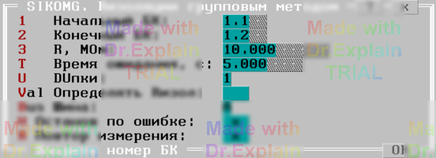

3.7 Сопротивление изоляции коммутатора групповым методом (SIKOMG)
Тест позволяет проверить, а также измерить собственное сопротивление изоляции коммутатора при подключении точек к шинам групповым методом.
Сначала появляется меню (см. рисунок 1):

Параметры
- 1-ый БК — адрес начального БК диапазона проверяемых БК;
- 2-ой БК — адрес конечного БК (для одного БК оба адреса должны совпадать);
- Rэт, МОм — уставка сопротивления для расчёта порога проверки;
- Время ожидания — время ожидания сигнала «НОРМА» от ПКИ (0 — 5 с по умолчанию);
- DUпки — диапазон испытательного напряжения: 1 (5 В), 2 (30 В), 3 (100 В), 4 (250 В), 5 (499 В);
- Определять Rизол — включить измерение Rизол методом перебора уставок;
- Шина — основная шина для подключения групп точек (A или B).
Алгоритм проверки
Подготовка
- Установить заданный режим ПКИ.
- Проверить отсутствие связи между шинами A1 и B1. При замыкании выводится «Замыкание шин A1 и B1» и тест экстренно завершается.
Для всех БК из диапазона выполняется цикл групповых разбиений.
Для каждого разбиения
- Включить (при необходимости) режим пониженного напряжения ПКИ.
- Включить КЗШ.
- Подключить точки текущего разбиения к выбранной шине; остальные — к альтернативной.
- Отключить КЗШ.
- Установить заданный режим ПКИ.
- Проверить отсутствие связи. При «браке» (или включённой опции «Определять Rизол») выполнить измерение Rизол.
-
Во время проверки появляется сообщение, например:
$TST1 БК1.1 РГВ=FEh 1111110, где:- БК1.1 — первый БК первой СК;
- FEh — шестнадцатеричный код разбиения;
- 1111110 — двоичный код разбиения: 0 — к альтернативной шине, 1 — к основной.
После проверки всех разбиений появляется итоговое меню (см. п. 6.3).